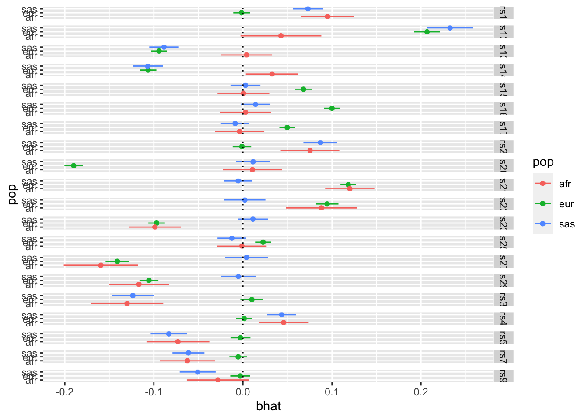

GWAS being performed on multiple ancestries, then meta-analysing to mitigate problems of LD tagging. QUESTION - how to determine rate of agreement of associations across ancestries. Power differs due to different allele frequencies and sample sizes (reflected in the SE of the assoc).
How often does the sign in pop1 agree with the sign in pop2?
Test statistic comparing observed vs replication rates
Simulate 100 effects for 3 populations. For each population select a few SNPs to be null, otherwise all SNPs have the same effect in each population. Each population has a different sample size.
library(simulateGP)library(dplyr)
Attaching package: 'dplyr'
The following objects are masked from 'package:stats':
filter, lag
The following objects are masked from 'package:base':
intersect, setdiff, setequal, union
For each SNP test for heterogeneity of effects between populations. This uses Cochrane’s Q test statistic.
Analysis functions:
fixed_effects_meta_analysis <-function(beta_vec, se_vec){ w <-1/ se_vec^2 beta <-sum(beta_vec * w) /sum(w) se <-sqrt(1/sum(w)) pval <-pnorm(abs(beta / se), lower.tail =FALSE) Qj <- w * (beta-beta_vec)^2 Q <-sum(Qj) Qdf <-length(beta_vec)-1 Qjpval <-pchisq(Qj, 1, lower.tail=FALSE) Qpval <-pchisq(Q, Qdf, lower.tail=FALSE)return(list(beta=beta, se=se, Qpval=Qpval, Qj=Qj, Qjpval=Qjpval))}# fixed_effects_meta_analysis(c(1,2,3), c(0.3, 0.3, 0.3))# fixed_effects_meta_analysis(c(1,1,1), c(0.3, 0.3, 0.3))#' Test for heterogeneity of effect estimates between populations#' #' @description For each SNP this function will provide a Cochran's Q test statistic - a measure of heterogeneity of effect sizes between populations. A low p-value means high heterogeneity.#' In addition, for every SNP it gives a per population p-value - this can be interpreted as asking for each SNP is a particular giving an outlier estimate.#' #' @param sslist Named list of data frames, one for each population, with at least bhat, se and snp columns#' #' @return List#' - Q = vector of p-values for Cochrane's Q statistic for each SNP#' - Qj = Data frame of per-population outlier q values for each SNPheterogeneity_test <-function(sslist) { b <-lapply(sslist, \(x) x$bhat) %>% bind_cols se <-lapply(sslist, \(x) x$se) %>% bind_cols o <-lapply(1:nrow(b), \(i) {fixed_effects_meta_analysis(as.numeric(b[i,]), as.numeric(se[i,])) }) Q <-tibble(snp = sslist[[1]]$snp, Qpval =sapply(o, \(x) x$Qpval)) Qj <-lapply(o, \(x) x$Qjpval) %>%do.call(rbind, .) %>%as_tibble() %>%rename(setNames(paste0("V", 1:length(sslist)), names(sslist))) %>%mutate(snp = sslist[[1]]$snp)return(list(Q=Q, Qj=Qj))}
Run analysis:
o <-heterogeneity_test(list(eur=ss_eur, afr=ss_afr, sas=ss_sas))
Warning: The `x` argument of `as_tibble.matrix()` must have unique column names if
`.name_repair` is omitted as of tibble 2.0.0.
ℹ Using compatibility `.name_repair`.
We could then dig deeper and look at the per-population estimates for the SNPs that have some heterogeneity
# Which SNPs have heterogeneity after multiple testing correctionindex <-which(o$Q$Qpval <0.05/nrow(o$Q))# Get per-population effect estimates for those SNPs# Make forest plotsbind_rows( ss_eur[index,] %>%mutate(pop="eur"), ss_afr[index,] %>%mutate(pop="afr"), ss_sas[index,] %>%mutate(pop="sas")) %>%ggplot(., aes(x=bhat, y=pop)) +geom_point(aes(colour=pop)) +geom_errorbarh(aes(colour=pop, xmin=bhat-se*1.96, xmax=bhat+se*1.96), height=0) +facet_grid(snp ~ .) +geom_vline(xintercept=0, linetype="dotted")

Expected vs observed replication
This might not be as useful as the heterogeneity stuff above, but some example code below
#' Expected vs observed replication rates#' #' @description For a set of effects that have discovery and replication betas and SEs, this function determines the extent to which the observed replication rate matches the expected replication rate. #' The expected replication rate is based on the assumption that the replication dataset has the same effect sizes but that the power may be different (e.g. due to allele frequencies or sample sizes) and is reflected in the replication standard errors. #' It assesses replication based on concordance of effect direction across discovery and replication, and p-values surpassing a user-specified p-value threshold.#' #' @param b_disc vector of clumped incidence hit effects#' @param se_disc the standard errors for incidence effects#' @param b_rep corresponding vector of associations in progression#' @param se_rep standard errors of effects in progression#' @param alpha p-value threshold to check for replication of incidence hits in progression (e.g. try 0.05 or 1e-5)expected_vs_observed_replication <-function(b_disc, b_rep, se_disc, se_rep, alpha){ p_sign <-pnorm(-abs(b_disc) / se_disc) *pnorm(-abs(b_disc) / se_rep) + ((1-pnorm(-abs(b_disc) / se_disc)) * (1-pnorm(-abs(b_disc) / se_rep))) p_sig <-pnorm(-abs(b_disc) / se_rep +qnorm(alpha /2)) + (1-pnorm(-abs(b_disc) / se_rep -qnorm(alpha /2))) p_rep <-pnorm(abs(b_rep)/se_rep, lower.tail=FALSE) res <- tibble::tibble(nsnp=length(b_disc),metric=c("Sign", "Sign", "P-value", "P-value"),datum=c("Expected", "Observed", "Expected", "Observed"),value=c(sum(p_sign, na.rm=TRUE), sum(sign(b_disc) ==sign(b_rep)), sum(p_sig, na.rm=TRUE), sum(p_rep < alpha, na.rm=TRUE)),pdiff=c(NA_real_, binom.test(value[2], nsnp[2], value[1]/nsnp[2])$p.value, NA_real_, binom.test(value[4], nsnp[4], value[3]/nsnp[4])$p.value) ) res_per_variant <-tibble(expected_pval = p_sig,observed_pval = p_rep < alpha,replication_fail = expected_pval >0.95&! observed_pval,expected_sign = p_sign,observed_sign =sign(b_disc) ==sign(b_rep),sign_fail = expected_sign >0.95&! observed_sign )return(list(res=res, variants=res_per_variant))}forest_plot <-function(sslist, snp){tibble(beta =sapply(sslist, \(x) x$bhat[snp]),se =sapply(sslist, \(x) x$se[snp]),label =names(sslist) ) %>%ggplot(., aes(x=beta, y=label)) +geom_point() +geom_errorbarh(aes(xmin=beta-se*1.96, xmax=beta+se*1.96), height=0) +geom_vline(xintercept=0, linetype="dotted") +labs(x="beta", y="population")}
index <-which(ss_eur$pval <5e-8)o_eur_afr <-expected_vs_observed_replication(ss_eur$bhat[index], ss_afr$bhat[index], ss_eur$se[index], ss_afr$se[index], 0.05)o_eur_afr